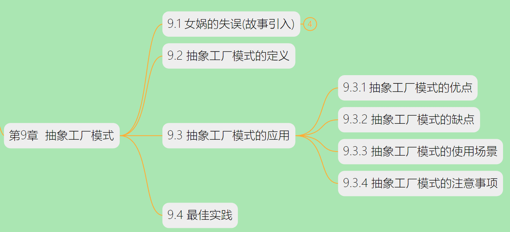
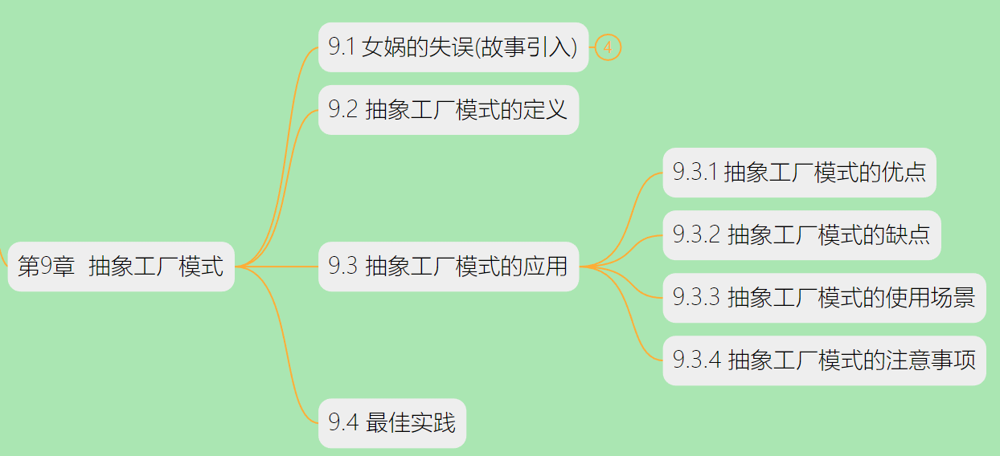
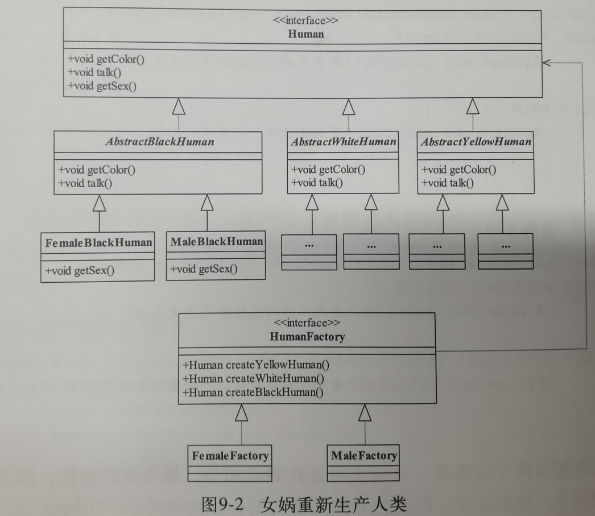
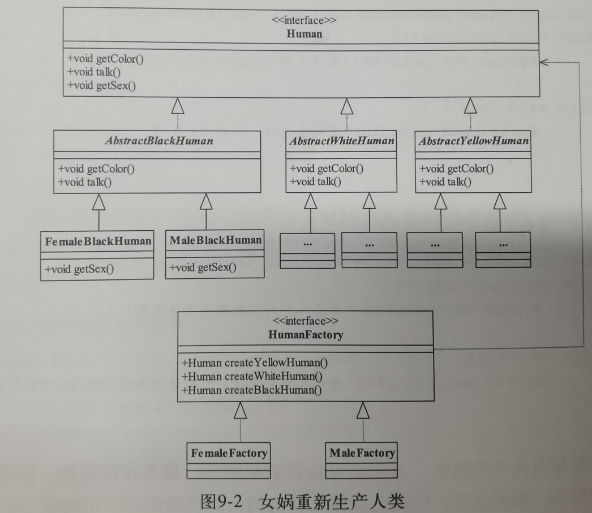
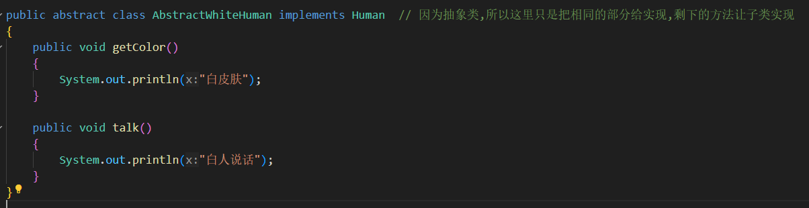
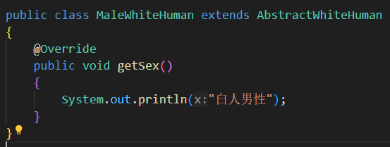
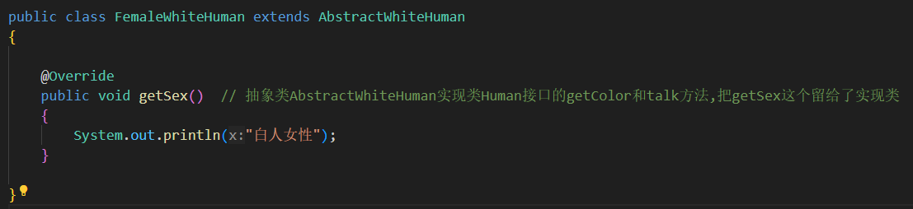
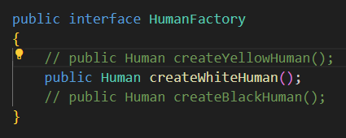
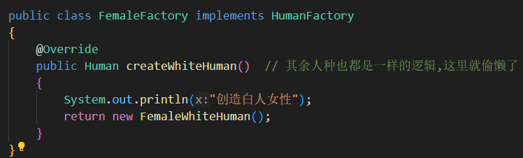

首先对第九章的结构进行整体梳理


目标变化:为了实现人种性别的不同,将每个人种又进行拆分
 UML图:把原本的黑人实现类改成抽象类,实现类分成黑人男和黑人女.
代码编写:
 UML图:把原本的黑人实现类改成抽象类,实现类分成黑人男和黑人女.
代码编写:
- 修改了Human接口

- 新增AbstractWhiteHuman抽象类,在这里面实现了共同的方法部分
 新增两个实现类
-
新增MaleWhiteHuman实现类,实现了白色男性
 -
新增FemaleWhiteHuman实现类,实现了白色男性

-
新增MaleWhiteHuman实现类,实现了白色男性
- 新增HumanFactory工厂接口
- 工厂实现类
 - 测试类